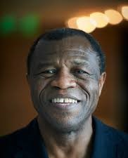

<main class="content">
    <div class="container-fluid p-0">

        <h1 class="h3 mb-3"><strong>Actualité</strong></h1>
        <hr style="color: green;">
        <div class="card">
            <div class="col-12" style="background-color: rgb(40, 54, 42);">
                <div class="card flex-fill w-100" style="background-color: rgb(41, 59, 44) !important;">
                    <div class="col-md-8 col-xl-8">
                        <div class="card" style="border-radius: 20px 20px 20px 20px !important;">
                            <div class="card-body h-100">

                                <div class="d-flex align-items-start">
                                    <div class="flex-grow-1">

                                        <div class="row g-0 mt-1">
                                            <div class="col-6 col-md-4 col-lg-4 col-xl-3">
                                                
                                            </div>
                                        </div>
                                        <small class="float-end text-navy"></small>
                                        Pr. <strong>Charles AWONO ONANA </strong><br>Président de l’Université des
                                        Montagnes<br />
                                        <small class="text-muted"></small>
                                    </div>
                                </div>

                                <hr />
                                <div align="justify">
                                    <p>Il y’a deux décennies que l’Université des Montagnes (UdM) travaille pour la
                                        recherche et la promotion de l’excellence académique.
                                        Créée à l’initiative de l’Association pour l’Education et le Développement(AED),
                                        association à but non lucratif de la société civile camerounaise,
                                        l’UdM s’impose aujourd’hui comme une institution universitaire de référence au
                                        Cameroun et dans la sous-région d’Afrique centrale.</p>
                                    <p>Pôle majeur de formation au Cameroun, l’UdM est une communauté de près de plus
                                        2000 personnes constituée d’étudiants,
                                        d’enseignants-chercheurs, du personnel administratif et du personnel d’appui.
                                    </p>
                                    <p>Les formations que l’UdM propose dans ses facultés des Sciences de la Santé, des
                                        Sciences et Technologies ,
                                        de l’Institut d’Etudes Africaines, des Sciences sociales et du Management
                                        débouchent sur des qualifications adaptées à l’évolution actuelle du Cameroun et
                                        de l’Afrique.</p>
                                    <p>L’UdM est consciente de la contribution qu’elle doit apporter à la société. Elle
                                        est aujourd’hui un acteur majeur de développement de son territoire, que ce soit
                                        dans le domaine scientifique, culturel ou économique.
                                        Elle entend devenir un moteur incontournable du développement au niveau
                                        régional, national et international.</p>
                                    <p>Acteur engagé dans le développement et ouvert sur le monde, l’UdM a noué des
                                        relations de <b>coopération avec plus de 20 universités et associations
                                            partenaires tant en Afrique qu’en Europe et en Amérique. </b>
                                        Ces partenaires séjournent régulièrement sur ses campus aussi bien pour des
                                        enseignements et des travaux de recherches que pour soutenir l’institution dans
                                        son développement.</p>
                                    <p>nstitution citoyenne à but non lucratif, l’UdM a, dès le départ, bénéficié pour
                                        son émergence, des contributions multiformes des bienfaiteurs de toutes origines
                                        et surtout de la diaspora camerounaise d’Europe,
                                        d’Amérique du Nord et de leurs réseaux de relations. Comme toute institution de
                                        cette nature, les besoins sont immenses et elle continue de compter sur le
                                        soutien de toutes les bonnes volontés pour consolider ses acquis et poursuivre
                                        sa croissance.</p>
                                    <p>Je souhaite une excellente année universitaire aux membres de notre communauté et
                                        je remercie chaleureusement tous les amis de l’UdM de par le monde qui ne
                                        cessent de soutenir le développement de cette institution.</p>
                                    <br><br>
                                    <p> <b> Le président de l’Université des Montagnes <br>
                                            Pr Charles AWONO ONANA</b></p>
                                </div>


                                <hr />
                            </div>
                        </div>
                    </div>
                </div>
            </div>
        </div>
    </div>
</main>